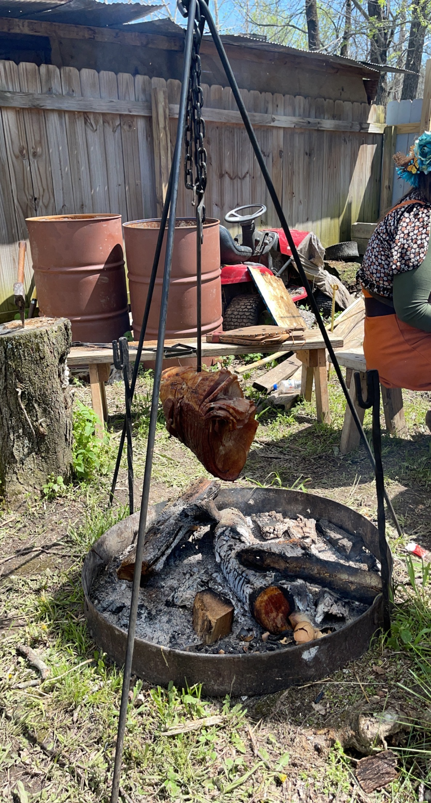
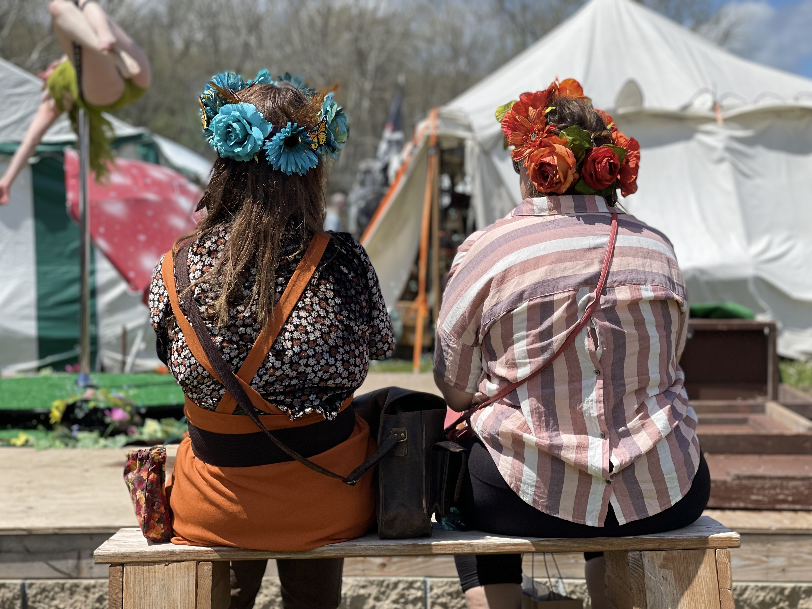
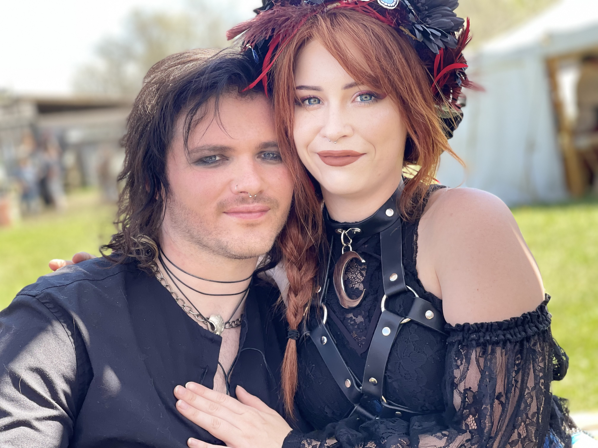

Festival Discoveries
Remembering the Ren Fest adventures of four close friends!
Remembering the Ren Fest adventures of four close friends!
During the summer of 2022, I went on an adventure to The Renaissance Festival with some of my best friends. It was one of the most memerable adventures I've ever had & I'd love to share some of my favorite memories with you!

There were a lot of cool things for us to see! Rows of venders to shop from, large booths where ceremonies & jousting would take place, & everybody was dressed up in character! I even found a man with a very large dragon puppet that let me take a photo with him. How cool!

We decided to try some tea from one of the popular food vendors. The line was super long, but it was worth the wait! The tea was so sweet & had a unique, flowery taste unlike anything I've ever tried before!

Just around the corner from the tea vendor was a spit with a huge ham on it, & a fairy woman performing on a tall metal ring! We took the opportunity to rest on the benches, drink our tea & watch the performance together by the fire.
 Lastly, a photagrapher came along who loved our costumes, so he asked us if he could take our pictures. We said yes of course! We connected on social media & he shared the photos with us a few weeks later. They really turned out great!
